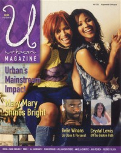
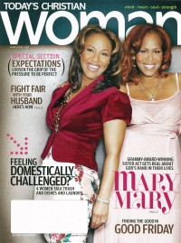

Mary Mary
|  May 2002 URBAN |
 March 2009 Today's Christian Woman |
 May 2011 CCM Digital |
Media coverage
- Aug 2000 in CCM "Talent Pool: Sister Act", by Beau Black
- Jan 2001 in CCM "In Concert: Beacon Theatre, New York, NY", by Angela G. King
- Feb 2001 in CCM "Breaking the Chains", by Lis Trouten
- Jul 2001 in CCM "Story Behind the Song: Shackles (Praise You)", by Christina Farris
- Apr 2002 in CCM "The Gospel According to Mary Mary", by Lisa Tedder
- May 2002 in URBAN "Shining Stars", by Debra Akins
- Nov 2003 in URBAN "Gotta Hove Gospel", by Debra Akins
- Aug 2005 in CCM "Mary Mary's Step Program To Success", by Anthony Barr-Jeffrey
- Nov 2005 in CCM "5 Questions With: Mary Mary", by Andrea Bailey Willits
- Aug 2006 in CCM "This One's for the Girls", by Gregory J. Rumburg
- Mar 2009 in Today's Christian Woman "Today's Christian Woman Talks To Mary Mary"
- May 2011 in CCM Digital "Cover Feature: Mary Mary's Big Mission", by Caroline Lusk
- Jun 2011 in CCM Digital "Tour Spotlight: Still Something Big Tour, Chicago Theatre, Chicago, IL", by Andy Argyrakis
Albums & reviews:
2000: Thankful
- Jul 2000 in CCM, by Jamie Lee Rake
- Jul 2000 in YouthWorker, by Dave Urbanski
- Jul 2000 in CBA Marketplace, by Jamie Lee Rake
- Aug 2000 in Charisma & Christian Life, by Twanna Powell Crenshaw
- Aug 2000 in CCM, by Lisa Kimmey
- Sep 2000 in Today's Christian Woman
2002: Incredible
- Jul 2002 in CCM, by Matthew Turner
- Sep 2002 in CBA Marketplace, by Jamie Lee Rake
- Sep 2002 in Today's Christian Woman
- Sep 2002 in Christian Music Planet, by Kyle Miller
- Oct 2002 in Charisma & Christian Life, by Twanna Powell Crenshaw
- Jan 2003 in YouthWorker, by Dave Urbanski
2008: The Sound
- Jan 2009 in Today's Christian Woman
- Jan 2009 in Worship Leader
- Jan 2009 in Charisma & Christian Life, by Cameron Conant
- Mar 2009 in Christian Single, by Jewly Hight
- May 2009 in Living With Teenagers, by Randy Williams
Award Summary (Nominations / Wins)
Dove Awards- 2001 Dove Awards
- Short Form Music Video: "Shackles (Praise You)"
- New Artist
- Urban Recorded Song: "Shackles (Praise You)"
- Urban Recorded Song: "Thankful"
- Urban Album: Thankful
- Urban Recorded Song: "Thank You"
- Contemporary Gospel Recorded Song: "In The Morning"
- Urban Recorded Song: "Ordinary People"
- Urban Album: Incredible
- Urban Recorded Song: "Dance, Dance, Dance"
- Contemporary Gospel Album: Mary Mary
- Urban Recorded Song: "Heaven"
- Traditional Gospel Recorded Song: "Call Him Jesus"
- Christmas Album: A Mary Mary Christmas
- Group of the Year
- Contemporary Gospel Album: The Sound
- Urban Recorded Song: "Get Up"
- Urban Album: Something Big
- Contemporary Gospel/Urban Recorded Song: "Go Get It"
- Traditional Gospel Recorded Song: "All In His Plan"
- 2000 Grammy Awards
- Best Contemporary Soul Gospel Album: Thankful
- Best Contemporary Soul Gospel Album: Mary Mary
- Best Gospel Song: "Heaven"
- Best Gospel Performance: "Get Up"
- Best Gospel Song: "Get Up"
- Best Contemporary R&B Gospel Album: The Sound
- Best Gospel Song: "God In Me"
- Best Gospel Song: "Every Prayer"
- Best Gospel Song: "Sitting With Me"
- Best Gospel Album: Something Big
- Best Gospel Song: "Go Get It"
- Best Gospel/Contemporary Christian Music: Go Get It
- 2000 Billboard Music Video Awards
- Best New Artist Clip, Jazz & AC: "Shackles (Praise You)"
- Best Clip, Contemporary Christian: "I Sings"
Books about Mary Mary
- "Mary Mary" in The Encyclopedia of Contemporary Christian Music (Mark Allan Powell, 2002).
© 2011 CMnexus. Last updated August 2025. Contact: editor -AT- cmnexus -DØT- org